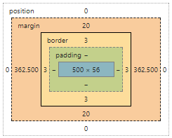
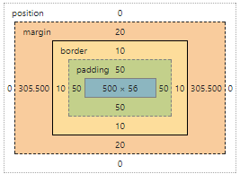

大多数元素的display属性默认值是block或inline, 一个block元素称之为块级元素，一个inline元素称之为行内元素。
block
例如
div, p, form, 这些tag都会开始一行并撑满容器
inline
一个行内元素可以在段落内包裹一些文字而不打乱段落的布局，例如
span, a
none
none不会占据空间,visibility却为之相反
other style
诸如
inline-block,flex,list-item
PS.参照这里display-list
使用width定义content的实际宽度，另外也可设置max-width可以解决宽度不够，水平滚动条的问题
main { width: 600px; max-width: 600px; margin: 0 auto; }
看例子：
.simple { width: 500px; margin: 20px auto; } .fancy { width: 500px; margin: 20px auto; padding: 50px; border-width: 10px; }

由这个例子看出外边框padding撑起的大小导致所占空间不同。如果想要width显示相同大小，这时引入一个新的属性box-sizing它只支持IE8+, 样式如下：
* { -webkit-box-sizing: border-box; -moz-box-sizing: border-box; box-sizing: border-box; }
position的属性值有很多, 可以参照这里css-position
static, relative 和 fixed相对比较容易理解。
这里重点学一下 obsolute, 引用下面的一段原博客的注释
absolute与fixed的表现类似，但是它不是相对于视窗而是相对于_最近的positioned祖先元素_。 如果绝对定位(position属性的值为absolute)的元素没有positioned祖先元素，那么它是相对于文档的 body 元素，并且它会随着页面滚动而移动。
常用于图片float文字中间, 而clear可以控制它的浮动。
如果float的图片超出了容器边界，这时候可以借助overflow属性
.clearfix { overflow: auto; }
百分比是一种相对于包含块的计量单位.
article img { float: right; width: 50%; }
当缩小页面时, article和img所占的空间比会以50%减少。PS.实际应用开发推荐百分比作为计量单位。
这种响应式设计(Responsive Design)对移动开发和不同浏览器或设备呈现不同显示效果的策略，这里就会用到percentage控制布局。
当浏览器窄到无法容纳侧边栏的菜单时，会将布局显示成一列。
看例子:--> demo这里
@media screen and (min-width:600px) { nav { float: left; width: 25%; } section { margin-left: 25%; } } @media screen and (max-width:599px) { nav li { display: inline; } }
Reference: css-layout